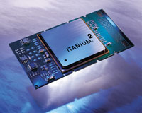
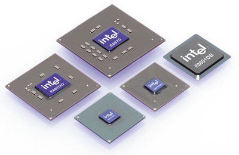
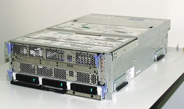
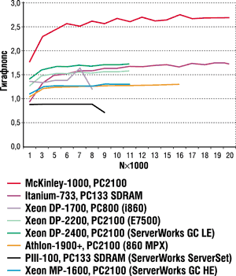

Андрей Борзенко
Как известно, 64-разрядные вычислительные системы присутствуют на рынке уже несколько лет. Однако до недавних пор область применения подобных технологий ограничивалась узким кругом дорогостоящих корпоративных решений, а влияние их на серверный рынок было незначительным из-за цен и ограниченного выбора. До появления в мае 2001 г. систем на базе процессора Itanium покупатели 64-разрядных систем были вынуждены приобретать процессор, систему, в которой он будет работать, ОС, а также услуги технической поддержки у одного и того же поставщика. Все это приводило к росту затрат и, что не менее важно, привязывало корпоративного заказчика к фирменной нестандартизованной архитектуре, ограничивавшей как возможности будущего технического развития, так и свободу вложения средств.
Новое, что привнесла в данный сегмент корпорация Intel (http://www.intel.com), - это основанная на стандартах 64-разрядная архитектура и соответственно лучшее соотношение цена/производительность для пользователей. По опубликованным данным, в разработку семейства процессоров Itanium было вовлечено более 60 тыс. человек из сотен фирм, создавших "общеотраслевое поле 64-разрядных технологий", на котором может работать практически любая заинтересованная компания. Фактически можно говорить о демократизации высокоуровневых вычислительных технологий, сделавшей их доступными более широкому кругу пользователей.
| По имеющейся информации, на тестирование систем с архитектурой Itanium корпорация Intel затратила примерно 500 тыс. человеко-часов. До 200 человек в течение нескольких лет занимались планированием и исполнением программ тестирования. |
Конечно, пройдет еще много лет, прежде чем все компьютеры станут 64-разрядными. Но с точки зрения корпоративных заказчиков 64-разрядная архитектура обладает двумя колоссальными преимуществами перед 32-разрядной. Во-первых, она позволяет работать с огромными объемами данных, что важно для операций с большими базами данных и требовательными к ресурсам корпоративными приложениями. Во-вторых, она позволяет значительно расширить объем адресуемой памяти компьютера. Возможность держать в памяти целые базы данных многократно ускоряет работу СУБД и столь необходимых всем защищенных Интернет-приложений. В настоящее время 64-разрядные системы ориентированы в первую очередь на корпоративные бизнес-приложения, решения для электронной коммерции и электронных каталогов, а также на инфраструктурные технологии Интернета (например, службы каталогов, службы безопасности, прокси-серверы, кэш- и Web-серверы).
По оценкам компании Aberdeen Group, к 2005 г. на продажи процессоров семейства Itanium будет приходиться более 40% всех доходов серверного рынка. Gartner Group более консервативна в своих прогнозах, но и она полагает, что к 2006 г. продажи процессоров семейства Itanium превзойдут продажи любого из остальных известных 64-разрядных процессоров.
Вообще говоря, 64-разрядные вычислительные системы - это совершенно отдельный мир. Здесь архитектурные решения принимаются на годы и даже десятилетия вперед. Именно такой уровень защиты инвестиций должен обеспечить процессор Intel Itanium и его наследники. В будущем системы на базе процессора Intel Itanium будут сосуществовать с 32-разрядными серверами на базе процессора Intel Xeon и дополнять их. Это связано с тем, что от перехода на 64-разрядные технологии сильнее всего выигрывают приложения, работающие с очень большими массивами данных или требующие очень большой адресуемой памяти.
Существует и фактор цены. Для компаний, которым нужны именно 64-разрядные технологии, системы с процессором Itanium значительно более привлекательны по соотношению цена/производительность, чем RISC-системы на основе фирменных архитектур. Специалисты Intel полагают, что процессоры семейства Itanium привнесут на этот рынок такую же экономию за счет массового характера производства и такое же снижение цен за счет открытой конкуренции, как другие процессоры Intel - на рынок настольных ПК.
Аналитики компаний Gartner и IDC полагают, что процессоры Intel Itanium и конкурирующие процессоры с 64-разрядными архитектурами некоторое время будут сосуществовать, однако в конечном счете именно Itanium станет решением для массовых систем. Причина в том, что процессоры семейства Intel Itanium предоставляют возможности выбора на каждом этапе: от поставщика компьютера и ОС до промежуточного ПО, приложений, обслуживания и технической поддержки, - и все это в сочетании с гибкостью и доступными ценами. В более долгосрочной перспективе компании, планирующие развитие своей ИТ-инфраструктуры, при выборе серверных платформ будут неизбежно принимать во внимание и производительность как таковую, и соотношение цена/производительность. Специалисты Intel уверены, что в сравнении с конкурирующими архитектурами процессоры Itanium будут выглядеть убедительно по обоим параметрам.
"Пик McKinley", или Itanium 2
В начале июля корпорация Intel официально объявила о начале поставок процессора Itanium 2 (рис. 1), ранее известного под кодовым названием McKinley. Этот кристалл - второй представитель семейства процессоров уровня предприятия. Архитектура Itanium в самой своей основе построена с учетом наиболее жестких требований корпоративных приложений -- обработки огромных объемов данных, непрерывности работы, масштабируемости и безопасности. Эти микросхемы должны обеспечивать высокую производительность программных систем анализа бизнес-информации, баз данных, систем планирования ресурсов предприятия, управления цепочкой поставок, компьютерного проектирования, а также средств осуществления защищенных транзакций.
|  | Рис. 1. Процессор Itanium 2.
|
Технические особенности
По имеющейся информации, площадь поверхности чипа в окончательной версии составляет 421 кв. мм - примерно на 10% меньше, чем планировалось вначале. По словам представителя Intel, размер кристалла сократился благодаря усовершенствованиям технологического процесса. Хотя кристалл Itanium 2 все равно остается достаточно большим, уменьшение его размеров оставляет чуть больше свободы для регулирования стоимости и объемов производства. Размеры Itanium 2 зависят от множества различных факторов. Чип, который выпускается с соблюдением проектных норм 180 нм, содержит довольно внушительную сверхоперативную память. Так, кэш-память третьего уровня имеет емкость 3 Мбайт (есть версия кристалла с емкостью кэш-памяти 1,5 Мбайт), второго уровня -- 256 Кбайт, а первого уровня -- 32 Кбайт. Оригинальный Itanium имел кэш-память третьего уровня в 4 Мбайт, которая располагалась на отдельном кристалле, а емкость кэш-памяти второго уровня составляла у него всего 96 Кбайт.
К тому же У Itanium 2 больше внутренних подсистем, чем у его предшественника. Всего он содержит 221 млн транзисторов. На момент выхода на рынок Itanium 2 имел тактовые частоты 900 МГц и 1 ГГц.
Процессоры Intel Itanium 2 совместимы на уровне кодов с ПО, скомпилированным для процессора Itanium первого поколения. Производительность большинства приложений на системах с новым процессором Intel Itanium 2, как ожидается, будет выше на 50-100% без перекомпиляции. Оптимизация же программного кода позволит поднять производительность еще выше. В новом процессоре предусмотрен также ряд архитектурных усовершенствований, в частности, более высокая внутренняя пропускная способность и более быстродействующая кэш-память. Дополнительные блоки исполнения команд также повышают пропускную способность процессора. В новом кристалле по сравнению с процессором Itanium первого поколения повышена эффективность предсказания потребностей приложений, что позволит значительно снизить потери процессорного времени из-за ошибочного прогнозирования.
В процессоре Itanium 2 реализован ряд ключевых функций повышения надежности и готовности. Архитектура Machine Check Architecture (MCA) и широкое применение технологии обнаружения и исправления ошибок (ECC) позволяют обнаруживать ошибки на уровне единичных разрядов и предотвращать потери данных. В сочетании с возможностями уровня системы (такими, как горячая замена компонентов) новый процессор позволяет создавать серверы и рабочие станции высокой надежности и готовности.
Ближайшие планы
Процессор Itanium 2 совместим на аппаратном уровне с двумя будущими поколениями процессоров этого семейства, а это значит, что кристаллы будущих поколений будет легко установить в существующие системы на базе процессора Itanium 2. Данная конструктивная особенность значительно увеличивает ценность и долговечность инвестиций OEM-производителей и пользователей в платформы на базе этого процессора.
В настоящее время в Intel разрабатываются еще пять процессоров семейства Itanium. Как планируется, все они появятся на рынке до конца текущего десятилетия. В 2003 г. компания представит Madison - усиленную версию Itanium 2, которая будет изготавливаться с соблюдением проектных норм 130 нм (а не 180 нм, как Itanium 2). Это позволит повысить быстродействие чипа и увеличить емкость кэш-памяти третьего уровня с 3 до 6 Мбайт. Кристалл будет основан на той же конструкции, что и Itanium 2, несмотря на меньшие габариты. Планируется также выпуск малопотребляющей версии процессора Itanium с кодовым названием Deerfield с кэш-памятью меньшего размера. По некоторым данным, в 2004 г. Intel планирует выпустить последователя Madison - Montecito, а в 2005-2006 гг. - Chivano.
Серверная платформа
Помимо нового процессора Intel также предложила фирмам-сборщикам компьютерной техники и интеграторам продукции структурообразующую компонентную платформу на базе Itanium 2. Платформа SR870BN4 (кодовое название Tiger) поддерживает четыре процессора, имеет модульную конструкцию и рассчитана на использование в высокоплотных средах для высокопроизводительных вычислений уровня предприятия.
Многие из функций уровня будущей платформы реализуются новым набором микросхем Intel E8870 (рис. 2), предназначенным не только для Itanium 2, но и для следующих процессоров этого семейства. Чипсет Intel 8870 предназначен для четырехпроцессорных серверов, но в сочетании с высокоскоростным коммутатором Scalability Port Switch превращается в чипсет E9870, способный обслуживать до четырех групп по четыре процессора. Однако представители Intel считают, что большинство фирм-производителей остановятся на двух таких группах. Используя коммутаторы других компаний, конструктивные блоки 8870 можно составлять в системы, обслуживающие до 512 процессоров. Одну такую гибридную систему, 16-процессорную, разрабатывает Unisys (http://www.unisys.com), а Bull (http://www.bull.com) планирует выпустить 32-процессорную систему. Intel рассчитывает, что чипсет E8870 прослужит долго. В серверах на его основе можно будет использовать не только Itanium 2, но и еще более быстродействующие процессоры, в том числе Madison и Montecito.
|  | Рис. 2. Набор микросхем Intel E8870.
|
Четырехпроцессорные серверы на базе Itanium 2 можно будет создавать и с использованием чипсетов других производителей. Так, корпорация Hewlett-Packard (http://www.hp.com) готовит для него чипсет zx1 Pluto, а IBM (http://www.ibm.com) - чипсет EXA Summit, который позволит создавать 4-, 8-, 12- и 16-процессорные машины. Набор микросхем ColdFusion-2 для 8-процессорных серверов Itanium 2 разрабатывает Hitachi, а NEC создает 32-процессорный чипсет на базе своего 16-процессорного продукта AzusA, поддерживающего первую версию Itanium. Unisys также будет поддерживать Itanium 2 в своих 32-процессорных системах СМР.
Поддержка индустрии
Ведущие мировые разработчики ПО уже начали создавать коммерческие приложения, специально оптимизированные для систем на базе процессора Intel Itanium 2: например, Weblogic (BEA), Supply Chain и Factory Planner (i2), DB2 и Websphere (IBM), SQL Server 2000 (Microsoft), 9i (Oracle), R/3 (SAP), LiveCache (APO) и v9.0 (SAS).
Процессоры семейства Itanium поддерживаются большим числом ОС, чем другие high-end аппаратные платформы уровня предприятия. В настоящие время поддержка процессора Itanium 2 уже реализована в таких ОС, как Microsoft Windows Advanced Server, Limited Edition; Hewlett-Packard HP-UX; версии Linux компаний Caldera, MSC.Software, Red Hat, SuSE и TurboLinux. Кроме того, Microsoft планирует выпустить версии Windows .NET Datacenter и Enterprise Server под процессор Intel Itanium 2, а Hewlett-Packard намерена в будущем представить версии своих ОС OpenVMS и Non Stop Kernel, оптимизированные под все процессоры этого семейства.
Процессоры семейства Itanium уже внедряют в свою информационно-технологическую инфраструктуру и испытывают сотни организаций во всем мире, в том числе Национальный центр прикладных супервычислений США (NCSA), Тихоокеанская северо-западная национальная лаборатория Министерства энергетики США (PNNL), Европейский центр ядерных исследований (CERN), Сингапурский институт биоинформатики - в сфере высокопроизводительных вычислений; Национальный центр анализа катастроф США (NCAC) и концерн DaimlerChrysler - в сфере компьютерного проектирования и для обслуживания собственных приложений, требующих интенсивных расчетов; компания VTG-Lehnkering - для развертывания ответственных систем планирования ресурсов предприятия; компании Liberty Medical, VeriSign и Reuters - для обслуживания внутренней инфраструктуры и баз данных; Корнельский университет и финансовая компания Wells Fargo - для обслуживания систем анализа бизнес-информации.
Стремление корпорации Intel к обеспечению совместимости процессоров не только гарантирует высокую окупаемость средств, вложенных в компьютерное оборудование, но и упрощает разработку новой продукции для широкого круга поставщиков аппаратно-программного обеспечения. Таким образом, предприятия, принимающие на вооружение решения на основе архитектуры Itanium, могут рассчитывать на дальнейшее наращивание мощи и расширение возможностей этих вычислительных решений благодаря быстрым темпам разработки новых компонентов.
Itanium в России
В отличие от большинства стран мира, в России фирмы - производители серверов занимают не менее 50% местного рынка и поставляют решения как начального уровня, так и масштаба предприятий. Согласно прогнозам компании IDC, в текущем году объем российского рынка серверов превысит 280 млн долл. и составит около 53 тыс. единиц. Основной рост прогнозируется в сегменте серверов стоимостью до 6 тыс. долл., т. е. там, где популярность решений на базе архитектуры Intel традиционно высока. Так, по данным исследования 94 тыс. Web-серверов вида http://www.domain_name.ru, организованного осенью 2001 г. авторами аналитического ресурса о сетевой безопасности Void.Ru, более 95% таких систем работают под управлением различных версий ОС FreeBSD, Linux и Windows. Это означает, что подавляющее большинство российских сайтов управляются системами на базе процессоров Intel, поскольку подобные ОС, за редким исключением, устанавливаются на серверы архитектуры Intel.
О емкости локального рынка серверов говорит и тот факт, что уже несколько российских компаний перешли рубеж ежегодного производства в 1000 серверов на платформе и компонентах Intel. За последние 12 месяцев они поставили более тысячи четырехпроцессорных серверов для нужд российских предприятий, государственных организаций и коммерческих учреждений.
Еще в конце июня компания Kraftway, один из признанных лидеров российского рынка вычислительной техники, объявила о завершении разработки и тестирования нового сервера GEG Express 6402 (рис. 3) на базе процессора Itanium 2. Стоит отметить, что одно из основных направлений развития этой компании связано сейчас именно с "тяжелыми" серверными решениями и 64-разрядной архитектурой. В частности, одним из ключевых направлений стало продвижение Microsoft Datacenter на базе архитектуры Intel как реальной альтернативы RISC-серверам. Kraftway участвует в долговременной программе Intel по продвижению серверов на базе 64-разрядной архитектуры. Причем сотрудничество по Merced началось еще в 2000 г. В настоящее время Kraftway обладает уникальным опытом тестирования и применения новых технологий Intel.
|  | Рис. 3. Сервер GEG Express 6402.
|
KraftwayКомпания Kraftway (http://www.kraftway.ru) представляет собой многопрофильный холдинг, основное направление деятельности которого - компьютерный бизнес. Производство компьютерной техники охватывает рабочие и графические станции, серверы уровня рабочих групп и уровня предприятия, сверхнадежные вычислительные системы в индустриальном исполнении, активные контрольно-кассовые машины. Всего с 1997 г. изготовлено и поставлено заказчикам около 200 тыс. компьютеров и серверов. Компания ориентирована на корпоративный рынок, в числе ее постоянных партнеров - более 600 крупных фирм и организаций. Общее же количество заказчиков превышает несколько тысяч. Технология производства основана на системе качества, разработанной в 1995 г. специалистами Kraftway совместно с Госстандартом России в соответствии с международным стандартом ISO 9000, и представляет собой замкнутый технологический цикл, включающий маркетинговую проработку потребительского рынка, анализ рынка комплектующих, 100%-ный входной контроль комплектующих, сборку, 100%-ный выходной контроль собранных изделий, организацию продаж и сервисного обслуживания. У Kraftway имеется более 80 авторизованных сервисных центров в большинстве регионов России. На сегодняшний день Kraftway выпускает несколько серий компьютерных систем под собственной торговой маркой GEG. Все компьютеры имеют сертификаты соответствия Госстандарта России и гигиенические сертификаты. Серверы GEG Express имеют подтверждения совместимости с SCO UNIX, Microsoft Windows NT Server, IBM OS/2 4.0 LAN Server, продуктами Novell. C января 1998 г. компания имеет официальный статус мастер-интегратора подразделения микроэлектроники Sun Microsystems. Это позволяет ей выпускать серверы и рабочие станции GEG на базе процессоров UltraSPARC и ОС Solaris. |
Тестирование GEG Express 6402
Новый сервер GEG Express 6402 построен на базе платформы Intel SR870BN4 и представляет собой компактную, оптимально скомпонованную серверную систему в промышленном исполнении, которая поддерживает от одного до четырех 64-разрядных процессоров Itanium 2 и до 32 Гбайт памяти типа DDR SDRAM. В системе использован набор микросхем Intel 82870, сервер предусматривает горячее подключение адаптеров PCI и PCI-X, горячую замену модулей блока питания и вентиляторов, а также жестких дисков. С помощью сигнальных светодиодов постоянно отображается состояние критически важных системных компонентов. Сервер поддерживает режим SMP (Symmetric Multiprocessing). Доступ к элементам сервера настолько прост и удобен, что замена любого компонента осуществляется за считанные секунды без дополнительных инструментов. Конструктивно сервер предназначен для монтажа в 19-дюймовую стойку и имеет высоту 4U. Масса сервера не превышает 41 кг.
Конфигурация тестируемой системы | Процессоры | 4 x 1.0 ГГц Intel Itanium 2 (кэш 3 Мбайт) | Память | 4 Гбайт DDR SDRAM (16 x 256 Мбайт DDR PC2100) | Сеть | Myrinet + Fast Ethernet | ОС | RedHat Linux-64 7.2 (Enigma), kernel 2.4.9-18smp | Используемое ПО и библиотеки | GCC 2.96; MPICH 1.2.1_gm; HPL 1.0; ATLAS v.3.2.1. |
Методология тестирования системы была специально разработана с учетом особенностей задач, решаемых серверами такого класса. Результаты тестирования продемонстрировали способность процессоров семейства Itanium 2 эффективно работать с ресурсоемкими приложениями, использовать колоссальные объемы оперативной памяти для различных требовательных приложений - например, больших баз данных, систем бизнес-аналитики, систем управления ресурсами предприятия, быстродействующих баз данных, хранящихся в оперативной памяти, - широко востребованных в банковской, производственной, инженерной и научно-исследовательской деятельности.
Тест LinpackТест Linpack был выбран в качестве критерия измерения производительности по причине его широкого распространения и доступности почти для всех рассматриваемых систем. Впервые Linpack был введен Джеком Донгаррой (Jack Dongarra) в 1976 г. Тест основан на решении системы линейных уравнений с плотно заполненной матрицей коэффициентов над полем действительных чисел методом исключения Гаусса. Вещественные числа, как правило, представляются с полной точностью. По сути, тест представляет собой широко используемый набор стандартных программ с особым акцентом на операции сложения и умножения чисел с плавающей запятой, позволяющих измерять производительность при решении линейных уравнений, которые часто встречаются в научных и технических расчетах. Каждый тест Linpack дает несколько результирующих величин (метрик), определяющих ожидаемую производительность и условия тестирования. Благодаря большому числу операций над вещественными числами результаты Linpack могут служить ориентиром при оценке производительности аппаратно-программной конфигурации в областях, интенсивно использующих сложные вычисления. Первоначально тест был написан на языке FORTRAN (эта версия и сейчас часто используется), но существует и версия на C. Основное время теста занимает внутренний цикл, выполняющий типичную для действий с матрицами операцию y(i) = y(i) + a*x(i). Стандартная версия теста оперирует с матрицами 100*100, но есть и версии для матриц размерами 300*300 и 1000*1000 с различными правилами оптимизации. Тест Linpack достаточно хорошо векторизуется и распараллеливается на большинстве систем. Сегодня Linpack широко используется для определения производительности компьютеров, в том числе мультипроцессорных систем. Так, на основе Linpack с 1993 г. формируется Top500 - список 500 наиболее производительных компьютеров. Top500 - это общепризнанная база для статистического анализа сектора рынка высокопроизводительных систем. Измеряя действительную производительность для различных задач n-й размерности, пользователь может получить максимальную достигаемую производительность не только для задачи размерности Nmax, но также и для задачи размерности N1/2, где достигается половина производительности Rmax. Для получения согласованных результатов производительности машин алгоритм, используемый для решения систем уравнений в процедуре тестирования, должен подтвердить стандартную операцию вычисления для LU-факторизации с выбором ведущего элемента столбца. В частности, операция вычисления для алгоритма должна иметь 2/3n3 + O(n2) операций с плавающей запятой, что исключает использование алгоритма быстрого перемножения матриц. Это сделано для обеспечения сопоставимого ряда величин производительности для всех компьютеров. Как правило, результаты теста идеально коррелируют с расчетной пиковой производительностью. |
Так, по данным тестовой лаборатории Kraftway, сервер GEG Express 6402 продемонстрировал высокую производительность, надежность, масштабируемость и удобство в эксплуатации, тем самым подтвердив существенные преимущества систем этого типа перед RISC-системами при работе с ключевыми приложениями корпоративного уровня. Согласно результатам тестирования, производительность однопроцессорной системы составила 3,25 гигафлоп, двухпроцессорной - 6,09, а четырехпроцессорной - 11,11 гигафлоп. Особо специалисты Kraftway отметили высокую надежность сервера, проявляющуюся в особо тяжелых условиях эксплуатации. Достаточно упомянуть тот факт, что в тестовой лаборатории сервер, начиная с мая этого года, практически непрерывно функционировал при температуре окружающего воздуха +37°C.
В таблице приведены результаты измерения скорости работы кластера из двух четырехпроцессорных серверов GEG Express 6402, соединенных сетью Myrinet, на операциях с плавающей точкой с помощью теста High Performance Computing Linpack Benchmark (HPL 1.0) под управлением ОС RedHat Linux 7.2. А на рис. 4 показаны сравнительные данные о производительности различных процессоров без оптимизации.
|  | Рис. 4. Производительность различных процессоров (на один ЦПУ).
|
Показатели производительности, гигафлоп, полученные в тесте HPL
| Nx1000* | На одном сервере | На двух серверах | ||
| 1 ЦПУ | 4 ЦПУ | 2x2 ЦПУ | 2x4 ЦПУ | |
| 17 | 2,666 | 9,653 | - | - |
| 18 | 2,681 | 9,877 | - | - |
| 20 | 2,891 | 10,220 | 9,548 | - |
| 21 | 2,908 | 9,987 | 9,549 | 18,500 |
| 22 | - | 9,987 | 9,987 | 19,040 |
| 24 | - | - | 10,160 | 19,390 |
| 26 | - | - | 9,801 | 19,620 |
| 28 | - | - | - | 19,860 |
| 30 | - | - | - | 20,050 |
Таким образом, по данным тестовой лаборатории Kraftway, сервер GEG Express 6402 продемонстрировал высокую производительность, надежность, масштабируемость и удобство в эксплуатации, тем самым подтвердив преимущества систем данного типа по сравнению с RISC-серверами при работе с ключевыми приложениями корпоративного уровня. Растущая поддержка архитектуры Itanium со стороны всей отрасли в сочетании с четким графиком выпуска будущих процессоров Intel позволяет надеяться на появление многочисленных экономичных и высокопроизводительных решений. Уже сейчас пользователи имеют широкий выбор совместимых ОС и пакетов прикладного ПО. Такая свобода выбора будет и в дальнейшем расширяться благодаря росту числа поставщиков высокотехнологичных решений на базе процессоров семейства Itanium.